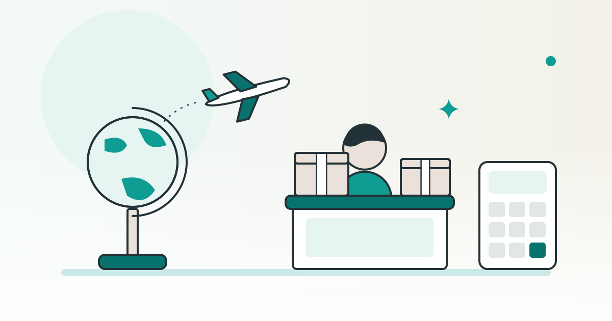

SHOPKIT コラム
輸入代行を個人のネットショップで使うには手数料の型と選び方

海外の商品を仕入れる際、注文から受け取りまでのどこを外へ頼むかで迷うことがあります。個人のネットショップで輸入代行を検討するときは、作業の範囲と見積もりの条件をそろえて比べましょう。手数料の計算方法と、商品ごとの確認を進める順番を整理します。
この記事は、完成品のネットショップを販売している SHOPKIT が書いています。
輸入代行は、海外で頼む作業の範囲から確かめる
まず、海外の相手への注文、現地での受け取り、内容の確認、まとめて送る準備、日本へ向けた発送を分けて書き出します。候補のサービスがどこを受け持ち、どこから自分で対応するのかを聞いてください。名前だけで、仕入れ先探しから手続までがすべて含まれると決めないようにします。
個人で使いたいと問い合わせるときは、店で販売する商品の仕入れであることも伝えましょう。扱う商品、素材や用途、希望する数量、送り先を用意し、取引を申し込むために必要な情報を尋ねます。自分の買い物とお店の仕入れを、同じ条件として進めないためです。
税関の個人輸入についての説明は、個人輸入には法令による定義がないとしたうえで、一般には自分で使う目的で海外から直接買うことだと説明しています。
販売する品を仕入れる場合の手続や扱いは、販売目的を伝えて税関や担当窓口で確かめてください。仕入れ先を探す段階の考え方は、関連の記事で整理しています。
関連：ネットショップの仕入れ先はどう探す？個人が使える仕入れ先と確かめること
頼める作業と、自分で決めることを分ける
依頼したい作業は、実際に何を確認してほしいかまで書きます。商品の品番・色・サイズ・数量を照らすのか、動作や素材まで確かめるのかでは、質問する内容が違います。検品という言葉だけで頼まず、確認する項目と、対象外の項目を回答で残しましょう。
| 依頼を検討する作業 | 相手に聞く内容 | 自分が用意・判断すること |
|---|---|---|
| 注文の手配 | 指定した商品の注文、欠品時の連絡、変更前の確認 | 品番・色・サイズ・数量、変更を認める条件 |
| 受け取りと確認 | 照合する項目、報告の形、確認しない項目 | 求める仕様と、回答を受けて進めるかの判断 |
| 梱包と発送 | 荷物をまとめる条件、梱包の指定、発送後の連絡 | 送り先と希望条件、見積もりや予定の確認 |
| 手続に関する支援 | 書類の用意や窓口への確認をどこまで受けるか | 販売目的と商品資料を伝え、必要な確認先を決める |
発送を担当する相手と、通関などの手続を担当する相手が同じかも確かめます。自分が用意する書類や、追加の照会に返答する担当まで整理してください。相手の受け持つ作業と、商品の選択や販売の案内を決める役割を対応させましょう。
関連：韓国から仕入れる方法｜現地・仕入れサイト・代行の違いと関税
手数料は、計算の基準・課金の単位・送料との区分で比べる
輸入代行の手数料を比べるときは、同じ商品と数量、依頼する作業を示して見積もりを求めます。この記事では、計算の基準、課金の単位、送料との区分を、見積もりの型を読むための欄として整理します。
買った額を基準に計算する見積もりなら、商品代だけが対象か、ほかの支払いも含めて計算するかを質問してください。最低の請求額や、注文を取り消したときの扱いも確認します。料率の表示だけを比べず、何に対して計算するのかをそろえるためです。
注文や荷物の件数を基準にする見積もりなら、何を単位として数えるかを確かめましょう。仕入れ先を分けたとき、別の日に届いたとき、荷物をまとめたときに、請求の数え方がどうなるかを聞きます。検品・保管・梱包などを追加する場合の計算も、基本の依頼と分けて示してもらってください。
送料に作業の対価を含むという案内なら、含まれる作業と別請求の項目を聞きます。荷物の重さや梱包後の大きさをいつ確かめ、最終の請求がいつ分かるかも質問しましょう。見積もりの段階で未定の部分は、確定した支払いと分けて残します。
比較表には、支払先、計算基準、含む作業、別請求、支払いの時期、変更時の扱いを並べてください。両替に使うレートや送金に関する負担も、説明のある箇所と確認日を記録します。答えが空欄の項目は、費用がかからないと解釈せず、依頼を決める前に質問しましょう。
関連：ネットショップの送料の決め方｜発送方法・梱包と先に伝えること
関税と消費税を誰が払うかを、注文の前に確かめる
見積もりでは、商品代や作業の対価、国内外の送料、税金に関する記載を分けて確認します。税金を見積もりに含めているか、後から請求するか、立て替える場合は誰から何の資料を受け取るかを尋ねましょう。
税関の関税の納税義務者の案内には、義務を負う人の原則と例外、書類の記載だけでなく輸入取引との関係も確認するという説明があります。
支払いを取り次ぐ相手の確認と、法令上の輸入者や納める義務を負う人の確認は、別の項目として質問しましょう。どの人の名義で手続をし、誰が照会に答えるのかを、取引の資料とともに確かめてください。契約の呼び名や請求書だけから、自分のケースの扱いを決めないようにします。
税関のカスタムスアンサー一覧から、輸入申告や税額の計算に関する説明へ進めます。個別の税率、税額、輸入者の扱いは、商品と取引の資料を添えて税関で確認してください。
偽物や輸入できない物を避けるために確かめること
税関の知的財産侵害物品の取締りの概要では、知的財産を侵害する物品を、輸入してはならない貨物として説明しています。
ロゴや特徴のある柄が付く商品は、出所や権利の確認に使える資料を求めましょう。取り扱えるというサービス側の返答だけで、個別の真贋や権利の扱いを確定しないようにします。疑問が残る商品は注文を見送り、資料を添えて窓口へ相談してください。
厚生労働省の食品等の輸入手続の案内は、販売や営業で使う目的の食品等について届出を説明し、対象には器具や容器包装なども含めています。
食品に触れる商品を候補にする場合は、用途や素材の資料を用意して、検疫所で対象や必要な手続を確かめましょう。発送を受け付けてもらえるかという質問と、日本で販売するための確認を分けて進めます。この記事では個別商品の輸入可否や届出の要否を判断しません。
使う前に、問い合わせ先と記録の残し方を決める
申し込む前に、質問を受ける窓口、対応する言語、返答を確かめる方法を聞きましょう。欠品、注文と違う物、手配の遅れなどが分かったとき、どの資料を添えて連絡するかも決めておきます。相手が仕入れ先へ照会する部分と、自分へ回答する部分を分けて確認してください。
依頼を決めた版の見積もりと作業範囲、注文の指定内容をひとまとまりで保存します。変更があれば、変更した商品、数量、費用や予定の違い、確認した日を追記しましょう。最新の合意内容と以前の案を見分けられるようにします。
選ぶときは、説明を受けた条件で自分の質問に答えがそろうかを見ます。手数料の計算、担当の境目、商品ごとの確認、照会の窓口が未定なら、その点を解消してから依頼する範囲を決めてください。
よくある質問
輸入代行は、個人のネットショップでも頼めますか？
候補のサービスに、店で販売する商品の仕入れであることを伝えて、取引条件と必要な情報を聞きましょう。販売用の手続や扱いは、税関などの窓口でも確かめてください。
輸入代行の手数料は、どう比べればよいですか？
商品と数量、頼む作業をそろえ、計算の基準、課金の単位、送料との区分を並べて確認しましょう。空欄の項目は、費用がかからないと判断せず質問します。
輸入代行の見積もりに、関税や消費税は含まれますか？
見積もりに含むか、後から請求するか、立て替えの場合の資料は何かを尋ねてください。納める義務を負う人や個別の税額は、取引資料を添えて税関で確認しましょう。
※ この記事のSHOPKITに関する当事者表示は、2026年10月15日時点のサービスページによります。税関と厚生労働省の公的資料は、2026年10月27日に確認しました。最新の輸入・税・届出の扱いは、公的な案内と担当窓口でご確認ください。